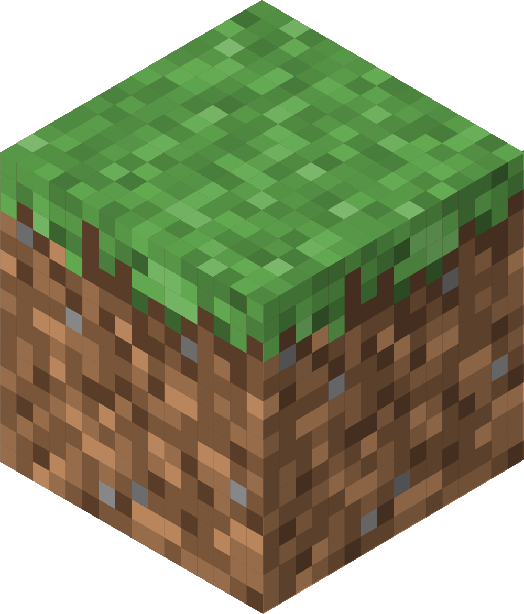

Trusted Minecraft mod & add-on sites
Safer places to find add-ons, maps, resource packs, and behavior packs for Minecraft Bedrock and Minecraft Education.
Bedrock uses add-ons, not Java mods.
Start with these sites
Click any card to open that site.

Minecraft Education Add-Ons Collection
Best first choice for Education Edition
Minecraft Education's official add-on collection for classrooms.
For classrooms and other educational environments. Focuses on learning rather than entertainment.
Open the official collectionMinecraft Marketplace Add-Ons
Safest integrated choice for Bedrock Edition
Minecraft's official marketplace for free and paid Bedrock add-ons.
For Bedrock Edition players. Marketplace add-ons may not work in Minecraft Education.
Open Marketplace add-onsCurseForge Bedrock Addons
Best large community directory
A moderated collection of Bedrock add-ons from independent creators.
For players who want more variety. Check the supported game version before downloading.
Be careful! Avoid clicking ads or installing anything they promote. They may lead to unsafe or malicious downloads.
Open Bedrock on CurseForgeMCPEDL
Large Bedrock-focused selection
A large community site for Bedrock add-ons, maps, textures, and skins.
For community-made content. Downloads may pass through ads, so check the final file.
Be careful! Avoid clicking ads or installing anything they promote. They may lead to unsafe or malicious downloads.
Open MCPEDL.comCheck these things before opening a file
- Read the address bar to confirm you're on the correct site.
- ONLY download
.mcaddon,.mcpack, or.mcworld. Be cautious with.zip; NEVER download.exeor.msi. - Check the creator, update date, supported version, and reviews.
- NEVER allow notifications, extensions, remote access, or account logins.
- Keep Microsoft Defender enabled and cancel unexpected downloads.
- Back up your world before installing an add-on.
Ad pages: Never install anything or grant permissions on them.
Community uploads are not guaranteed safe. Check the file and creator before opening it.
Add-on FAQ
How do I enable experimental features such as Beta APIs?
Watch my guide to enabling experimental features in Minecraft.
What should I do before enabling an add-on?
Make a backup of your world!
What if the add-on isn't compatible with my Minecraft version?
If you're using Minecraft Education, try the add-on in Minecraft Preview. Otherwise, look for a previous version of the add-on that supports your Minecraft version.
Why doesn't my .jar file work?
.jar files are mods for Minecraft Java Edition. For Minecraft Education or Bedrock add-ons, browse the recommended sites above.